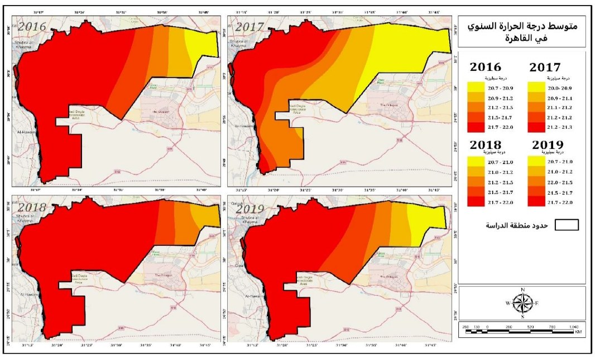
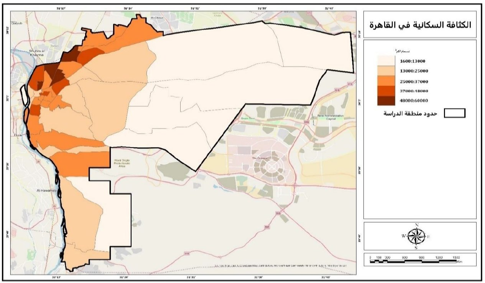
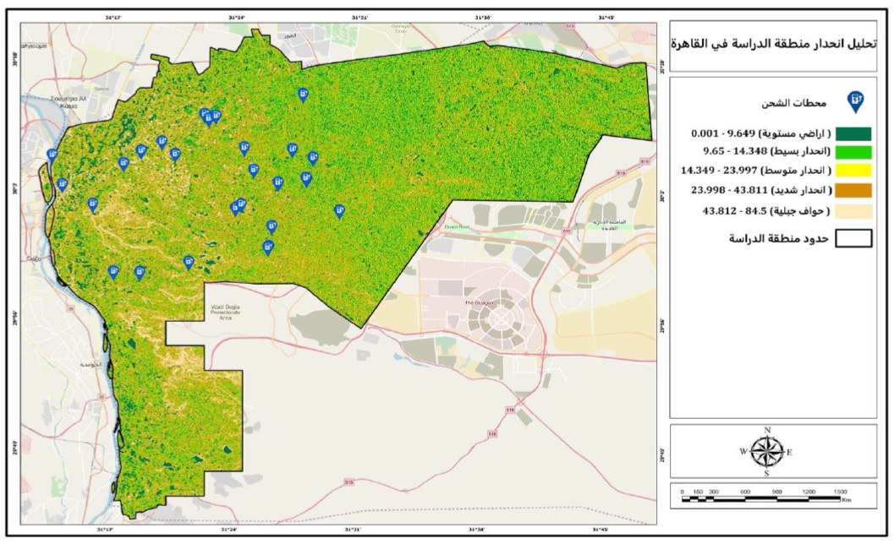
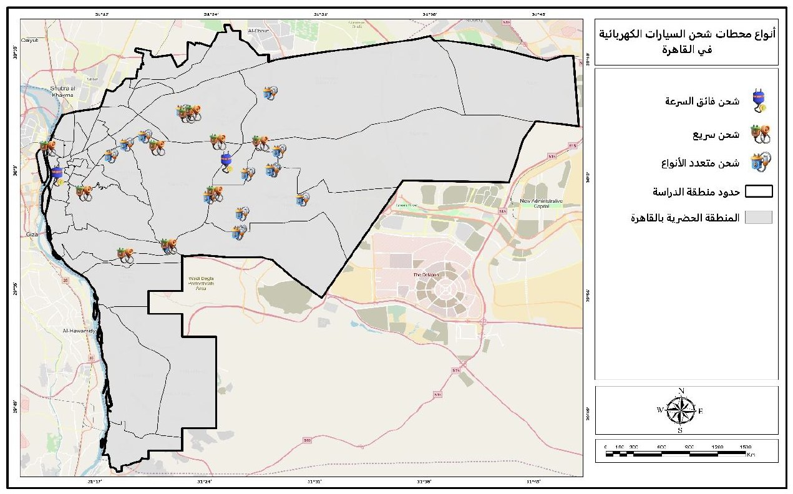
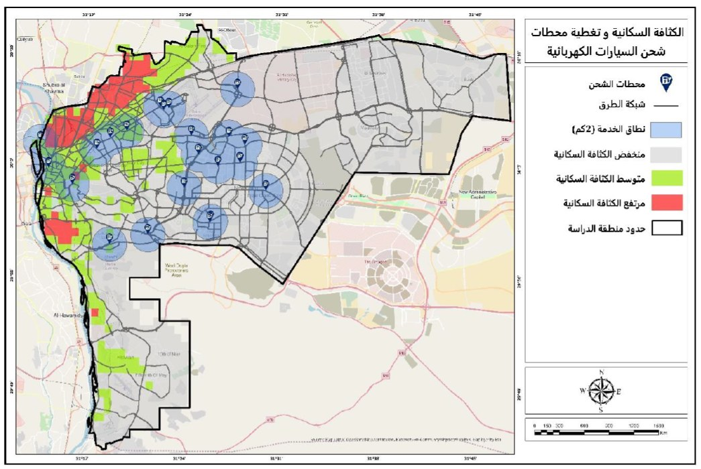
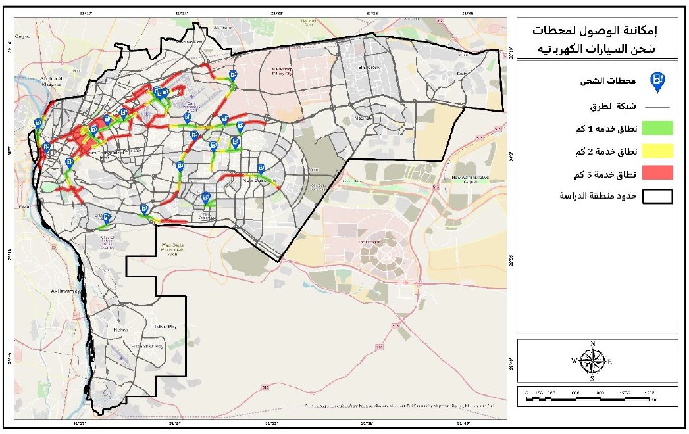
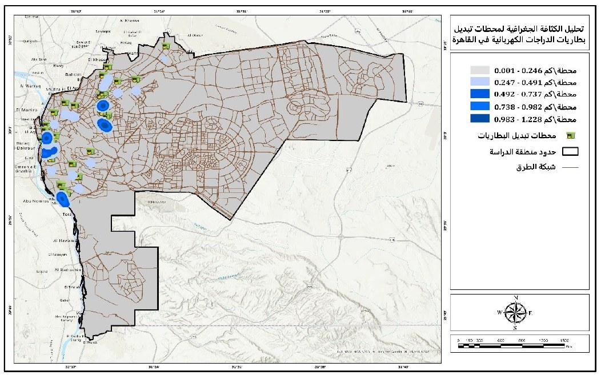

Graduation Project — Team Project — Grade: A
Optimal Distribution of EV Charging Stations, Cairo
Cairo Governorate, Egypt
A spatial analysis of the optimal distribution of EV charging stations for cars and e‑motorcycles across Cairo Governorate. Used GIS multi‑criteria analysis (AHP and Weighted Overlay) in ArcGIS Pro to find suitable sites, then ran Kernel Density, Nearest Neighbor, Gap Analysis and Network Analyst Service Area analysis to study station distribution and road access. Slope, NDVI, NDBI and Land Surface Temperature — derived from SRTM, Sentinel‑2 and Landsat‑8 — were used to rule out unsuitable land, producing a final suitability map for underserved areas.






